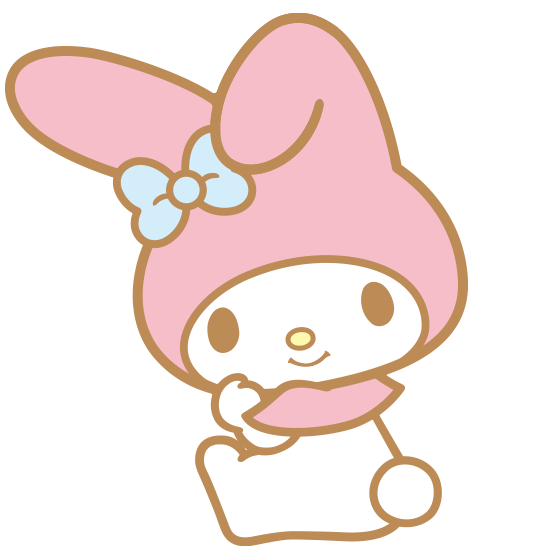

基线：src/lib/theme.ts 6 套主题 / src/styles/theme.css 每套约 110 个令牌。
本稿只解决四件事：① 三丽鸥角色换自有 IP（法务，必做）② 随之改名改文案 ③ 补一套中性深色「石墨」④ 外观页加「跟随系统」。
所有舞台都跑真 theme.css 令牌 + 逐字搬来的组件样式，颜色不由本稿自造（唯一例外是石墨三变体，见 §3 声明）。
| 决策 | 选项 | 本稿推荐 | 代价 / 风险 |
|---|---|---|---|
| ① 角色替换 必做 |
甲 自有熊猫立绘（同一份 SVG 全站染色复用） 乙 去角色化：只留爱心雨 + 蝴蝶结 + 星光 |
甲 | 乙最省事，但 blossom 会退化成「只有粉色的普通浅色主题」，四个露出点全空掉；甲要画一版资产（本稿已给成品矢量，见 §1）。 |
| ② 改名与文案 跟① |
主题名候选：樱粉 / 蜜桃 / 粉樱；吉祥物命名 团团（占位，可换） | 樱粉 + 团团 | 纯文案，零功能风险。但 HelpTooltip 里「官方立绘」四个字必须删（AppearanceSection.tsx:44），AboutTabContent.tsx:65 的 alt="My Melody" 也要改。 |
| ③ 石墨深色 新增 |
甲 纯中性灰 accent（macOS Graphite 口径） 乙 中性底 + 月银 accent（一丝冷色） 丙 中性底 + 琥珀 accent（暖色） |
乙 | 甲实测把主按钮白字压到 3.45:1（本稿 §5 读数会自己算给你看），必须把 --text-on-accent 反色成深字才达标；且选中/聚焦全靠亮度差承重，等于把「色相线索归零」引进产品（同一件事在 design/月白色调对照-色卡稿.html 里已经为月白量过并否决）。乙/丙保住色相，代价是「不算纯灰」。 |
| ④ 跟随系统 新增 |
甲 三档分段（跟随系统 / 固定浅色 / 固定深色）+ 浅深各记一次选择 乙 一个开关，跟随系统时自动挑「最接近的暗档」 |
甲 | 乙省不了多少代码，但 4 个浅色 → 2 个暗色的映射不唯一，用户切出来的深色会显得随机（晨曦→? ）。甲要加 2 个配置字段（theme_mode / theme_dark），后端 config 是自由 JSON（Rust 侧无 pub theme），不用改 Rust。 |
不做项见 §6 末尾：主题导入 / 社区皮肤 / 逐主题 accent 自定义，本稿一律不提议。
左边是现状（src/assets/melody.png，三丽鸥 My Melody 官方立绘 —— 这就是要被换掉的东西）；
中间是甲；右边是乙。三个舞台同尺寸 320×430，场景层与卡片层叠关系照 SkinScene.tsx 注释实现（.scene z-index:0 衬在 .inner z-index:1 之后）。

露出点 6 处（SkinScene:210 / Sidebar:332 / About:65 / AppIcon:20 / CardList:723 / ErrorBoundary:65）+ MelodyEmpty 组件本身
矢量 → 24px 到 132px 都不糊，且能跟着主题换色（下面尺寸带看真实档位）
角色位空出来，只剩粒子。侧栏脚部/关于页/空状态三处要改成纯文字或图标
panda.svg，主题色由 --pd-* 六个变量给；月白 / 石墨下的染色对照也在这一行右边两格
🔴 一个必须一起决定的点：AppIcon.tsx:20 现在是「blossom 主题下整个 app 图标换成美乐蒂」，包括侧栏顶栏的品牌位。
换成自有熊猫后这条分支保留还是砍掉？本稿默认保留（换成熊猫粉装版），因为这是 blossom 沉浸感的一部分；砍掉则 blossom 少一个卖点。
| 位置 | 现状文案 | 拟改 |
|---|---|---|
| theme.ts:18 displayName | 美乐蒂 | 樱粉（候选：蜜桃 / 粉樱） |
| Sidebar.tsx:333 | 美乐蒂帮你收着 💗 | 团团帮你收着 💗 |
| AppearanceSection.tsx:44 | 💡 美乐蒂：甜系卡通粉，爱心雨+官方立绘，少女心爆棚 | 💡 樱粉：糖果粉天空，爱心雨 + 自有熊猫陪着你 |
| AboutTabContent.tsx:65 | alt="My Melody" | alt=""（装饰图，交给旁边的应用名） |
| theme.css:771 注释 | blossom 美乐蒂（浅色·甜系卡通粉）… 官方美乐蒂立绘 | blossom 樱粉（浅色·糖果粉）… 自有熊猫立绘 |
| Settings.module.css:712 | /* 美乐蒂皮肤 */ :global([data-theme="blossom"]) | 注释改名；blossom 这个 key 不动（后端存储值，动了要写迁移） |
| 文件名 | src/assets/melody.png、src/components/MelodyEmpty.tsx、.melodyHeart/.melodyBow/.melodyChar 等 12 个类名 | 统一改 panda / blossom 前缀。key 不动，标识符要动 —— 它们全是 ASCII，不涉及存储契约 |
CSS 里已写明：3 字名在 11px 下要 33px，卡宽 64→72 就是为它改的（Appearance.module.css:8-11）。改 2 字更宽松，改 3 字持平。
立意只有一句：灰阶 R=G=B，不带蓝紫底调。现在两套深色都是高饱和色相底（午夜 #1c1832 紫 / 深海 #0e3355 蓝），嫌蓝紫刺眼的用户没得选。
石墨不挂 SkinScene（分支表在 SkinScene.tsx，与月白同侧），卡片实底、浮层不模糊 —— 这是代码分支事实，不是性能结论（要宣称省多少开销得另测）。
§5 的读数表会对这四个舞台各跑一遍同一组探针（WCAG 相对亮度实算，不是目测）。甲的 on-accent 那一行是本稿最想让你看的数字。
下面是真设置页 markup（.sSection / .sRow / .sRowIcon / .sSegGroup / .themeGrid 全部逐字搬），宽度由上方控件切 340 / 800 / 1100。
新增一行「主题模式」放在「主题配色」之上；配色网格按浅/深分两组，石墨进深组。
几何实测：…
| theme_mode | 系统深浅 | 生效主题 | 写入的 key |
|---|---|---|---|
| system | 浅 | theme（浅槽） | 点浅组卡 → 写 theme；点深组卡 → 写 theme_dark。两槽互不覆盖，所以「跟着系统来回切」不会丢选择。 |
| system | 深 | theme_dark（深槽） | |
| light / dark | 忽略 | 固定读对应槽 | 同上；系统改深浅不影响界面。 |
技术前提（已核，不是猜）：@tauri-apps/api 2.11.1 有 window.onThemeChanged() 与 window.theme()（node_modules/@tauri-apps/api/window.d.ts:519 / 1323），
初始值用 theme() 读、运行中用 onThemeChanged 跟。后端不用改：config 是自由 JSON，Rust 侧没有 pub theme 字段；
新值进 store 时照旧过 normalizeTheme()（theme.ts:32 那条历史兜底正是为脏值准备的）。
探针成对写死（前景令牌 vs 背景令牌），不靠 DOM 猜背景。四个舞台：石墨甲/乙/丙 + 现状午夜对照 —— 午夜的数字是给你比着看「新主题有没有比现状更差」，本批不修它。
| 主题 | 探针 | 前景 | 背景 | 比值 | 阈值 | 判定 |
|---|
读出来的四件事，逐条对着上面的数字看：
① 甲（纯中性）的白字压不住：#fff on #8a8a8a = 3.45，所以 --text-on-accent 必须反色成 #111（实装行 5.47）。丙同理（3.97 → 反色后 4.67）。乙不需要（白字 5.32）。
② 分段激活标签原来全不过：--seg-active-bg 取 #454545 时三档是 3.80 / 4.40 / 4.26，降到 #383838 后 4.65 / 5.38 / 5.21 全过 —— 这一条是本稿量出来才改的，不是先定后验。
③ 现状午夜的同一探针是 3.50（分段激活 #818cf8 on #3f3f46）。这是存量欠账，本批不修，只记一笔，免得石墨被当成唯一有问题的深色。
④ 卡片描边 1.21 是参考项不是判定项：U7 的 3:1 管「靠边框才能识别控件」（输入框 / 复选框）；卡片分层靠底色差 + 阴影（V1），描边不承担识别，所以它和现状午夜的 1.19 一起列「参考」。
AppearanceSection.tsx:50-54 那条 data-stack 注释）| 容器宽 | 浅组行数 | 深组行数 | 每行卡数（浅/深） | 实测卡宽 | 压缩量 | 首卡左偏移 | 是否溢出 |
|---|
这张表是 7 张卡（4 浅 + 3 深）的排布实测，三档宽度各量一次。结论：不需要给 .themeCard 补 flex-shrink:0 —— 340 档浅组是自己换行成 2 行（3+1），压缩量 0.00px，说明 flex-wrap 先于收缩发生，卡片不会被压扁。首卡左偏移 −1px 是卡片自身那圈 border:2px solid transparent 的量，不是 AppearanceSection.tsx:50-54 那条 data-stack 注释管的对齐 bug（那个 bug 的表现是偏 42px / 262px）。
🔴 这条读数是修出来的：第一次量时三档全报 800px、压缩 0.00，因为 #settingsHost 带 transition:width .2s，同一 task 里改完宽度立刻读，读到的是动画中间帧。关掉 transition 才拿到上面的真值。
| 决策 | 文件 | 动作 |
|---|---|---|
| ① 角色 | src/assets/panda.svg（新）· 删 melody.png | 成品矢量入仓；MelodyEmpty.tsx → BlossomPanda.tsx；6 个引用点改 <svg><use> 或 import SVG；SkinScene.module.css 12 个 .melody* 类名改前缀 |
| ① 角色 | src-tauri/icons/ · public/icon.png | 本稿不动：现有 P 形图标与三丽鸥无关，替换角色不影响安装图标 |
| ② 文案 | theme.ts:18 · Sidebar.tsx:333 · AppearanceSection.tsx:37-45 · AboutTabContent.tsx:65 · theme.css:771 | 改名 + 删「官方立绘」；blossom key 保持不动 |
| ③ 石墨 | theme.css（新块）· theme.ts（第 7 套）· AppearanceSection.tsx（THEME_PREVIEWS 加一条）· theme.test.ts（6→7、暗色名单）· SkinScene.tsx（确认不挂分支） | 完整字面 token 集（与 midnight 同构，约 70 条 + :root 派生） |
| ④ 跟随系统 | theme.ts（新增 resolveEffectiveTheme() 收口，规则 11.1）· appStore.ts（theme_mode/theme_dark + 默认值）· AppearanceSection.tsx（新行 + 分组网格）· App 挂载处订阅 onThemeChanged | 「亮暗判定」继续走唯一入口 isDarkTheme()（theme.ts:44，注释里已写明它是 4 个调用点的收口） |
| 守卫 | src/__tests__/themeTokensParity.test.ts（新） | 解析 theme.css，断言 7 个主题块的 token 集一致（差集非空即红），并先喂一个反例证明它会红再交付 |
不做：主题导入 / 社区皮肤 / 逐主题 accent 自定义（七套 × 约 110 token 的手工同步成本，本稿 §3 已经演示过一遍是什么感觉）。
版本号：本批不动（规则 2）。提交：等你说（规则 5）。